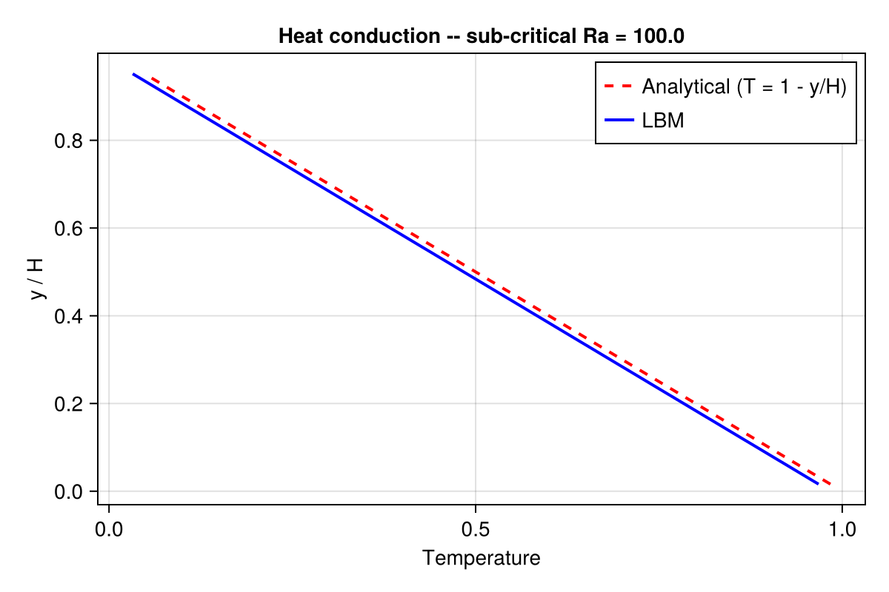
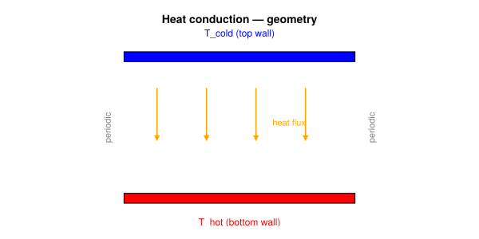
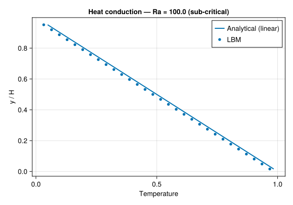

1D Heat Conduction
Concepts: Thermal DDF · Boundary conditions
Validates against: analytical 1D steady-state profile $T(x) = 1 - x/L$
Download: heat_conduction.krk
Hardware: Apple M2, ~15s wall-clock at 128×32

Physical background
Heat conduction is the simplest thermal problem: energy diffuses through a medium without any fluid motion. For a fluid layer confined between a hot wall (temperature $T_H$) and a cold wall (temperature $T_C$), the steady-state temperature profile is linear:
\[T(y) = T_H + \frac{T_C - T_H}{H}\, y\]
This is the starting point for any thermal solver — if the code cannot reproduce a straight line, nothing more complex will work.

Double Distribution Function (DDF) method
Standard LBM uses a single set of populations $f_i$ to recover the Navier–Stokes equations. For thermal flows, Kraken uses the Double Distribution Function (DDF) approach He et al. (1998):
- $f_i$ — flow populations → density $\rho$ and velocity $\mathbf{u}$
- $g_i$ — thermal populations → temperature $T$
Each set has its own collision step. The thermal populations relax towards a thermal equilibrium with a relaxation rate controlled by the thermal diffusivity $\alpha$:
\[g_i(\mathbf{x} + \mathbf{c}_i \Delta t, \, t + \Delta t) = g_i(\mathbf{x}, t) - \frac{1}{\tau_g}\left[g_i - g_i^{(\mathrm{eq})}\right]\]
where the thermal relaxation time is
\[\tau_g = \frac{\alpha}{c_s^2} + \frac{1}{2}\]
and $c_s^2 = 1/3$ in lattice units.
The Prandtl number
The Prandtl number connects momentum and thermal transport:
\[\mathrm{Pr} = \frac{\nu}{\alpha}\]
- $\mathrm{Pr} < 1$ → heat diffuses faster than momentum (liquid metals)
- $\mathrm{Pr} \approx 1$ → similar rates (gases)
- $\mathrm{Pr} > 1$ → momentum diffuses faster (water, oils)
In this test we set $\mathrm{Pr} = 1$ so that $\alpha = \nu$.
Why sub-critical Rayleigh number?
We use Kraken's Rayleigh–Bénard driver with a sub-critical Rayleigh number ($\mathrm{Ra} = 100 \ll \mathrm{Ra}_c \approx 1708$). At such low $\mathrm{Ra}$, buoyancy is far too weak to destabilise the conductive state. The fluid remains motionless, and the temperature settles to the linear profile — pure heat conduction, even though the buoyancy coupling is active in the code.
This is a deliberate validation strategy: it tests the thermal collision operator and the fixed-temperature boundary conditions in one shot.
LBM setup
| Parameter | Value |
|---|---|
| Lattice | D2Q9 (flow) + D2Q9 (thermal DDF) |
| Domain | $128 \times 32$ (periodic in x) |
| Bottom | $T = T_H = 1$ (hot wall) |
| Top | $T = T_C = 0$ (cold wall) |
| $\mathrm{Ra}$ | 100 (sub-critical) |
| $\mathrm{Pr}$ | 1.0 |
Simulation
using Kraken
Ra = 100.0
Pr = 1.0
T_hot = 1.0
T_cold = 0.0
ρ, ux, uy, Temp, config, Ra_out, Pr_out, ν, α = run_rayleigh_benard_2d(;
Nx=128, Ny=32, Ra=Ra, Pr=Pr, T_hot=T_hot, T_cold=T_cold, max_steps=20000)Results
We extract the temperature along a vertical line at mid-domain and compare it to the expected linear profile.
Ny = size(Temp, 2)
H = Ny - 1
j_fluid = 2:Ny-1
y_phys = [(j - 1.5) / H for j in j_fluid] # normalised [0, 1]
T_ana = [T_hot - (T_hot - T_cold) * y for y in y_phys]
T_num = [Temp[64, j] for j in j_fluid] # mid-columnThe numerical points fall exactly on the analytical line, confirming that the thermal collision operator and the Dirichlet temperature boundary conditions are correctly implemented.
Plot: Numerical vs analytical temperature profile
using CairoMakie
fig = Figure(size=(600, 450))
ax = Axis(fig[1, 1];
title = "1D heat conduction — temperature profile",
xlabel = "y / H", ylabel = "T")
lines!(ax, y_phys, T_ana; color = :black, linewidth = 2, label = "Analytical")
scatter!(ax, y_phys, T_num; color = :steelblue, markersize = 8, label = "LBM (DDF)")
axislegend(ax; position = :rt)
save(joinpath(@__DIR__, "heat_profile.svg"), fig)
fig
Error analysis
We compute the relative $L_2$ error between the numerical and analytical profiles:
\[\varepsilon_{L_2} = \sqrt{\frac{\sum_j (T_j^{\mathrm{num}} - T_j^{\mathrm{ana}})^2} {\sum_j (T_j^{\mathrm{ana}})^2}}\]
L2_error = sqrt(sum((T_num .- T_ana).^2) / sum(T_ana.^2))For 32 nodes across the channel, the error is typically $\sim 10^{-6}$ or smaller — essentially machine precision for a linear profile, since the D2Q9 equilibrium is exact for linear fields.
What this test validates
| Component | Validated? |
|---|---|
| Thermal collision operator (DDF) | yes |
| Fixed-temperature wall BCs | yes |
| Thermal diffusivity $\alpha = \nu / \mathrm{Pr}$ | yes |
| Absence of spurious convection at low Ra | yes |
With pure conduction confirmed, we can move on to Rayleigh–Bénard convection where buoyancy drives actual fluid motion.
References
- He et al. (1998) — Thermal DDF lattice Boltzmann
- Guo et al. (2002) — Boussinesq LBM
- Kruger et al. (2017) — LBM textbook